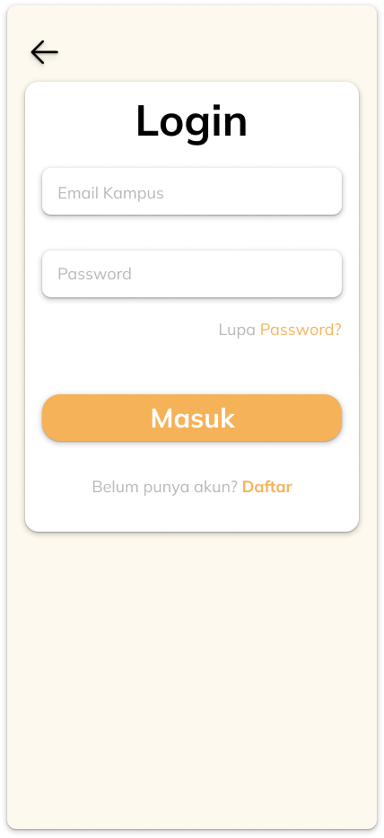
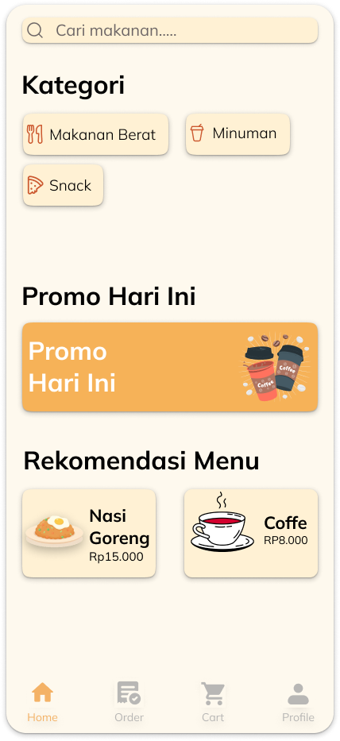
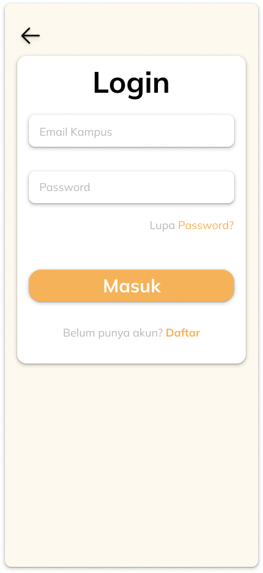
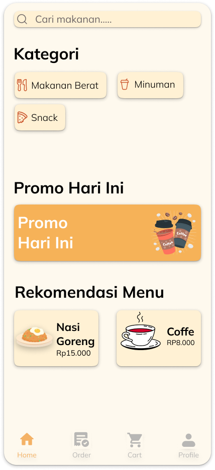
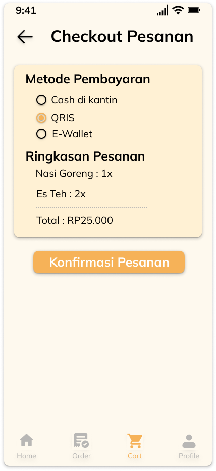
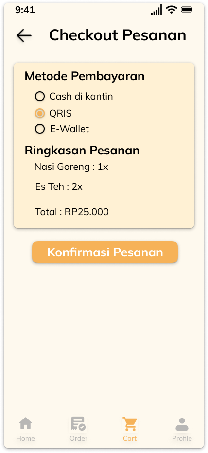

Del Caffe – UI/UX App
Aplikasi pemesanan makanan kantin kampus untuk memudahkan mahasiswa memesan tanpa harus antre. Desain mencakup: Login, Home, Detail Menu, Checkout, Order Status, Order Complete, dan Profile.
Peran Saya
- UI/UX Designer
- Visual Designer
- App Flow & Wireframing
- Prototyping
Gambar Desain
 





 
